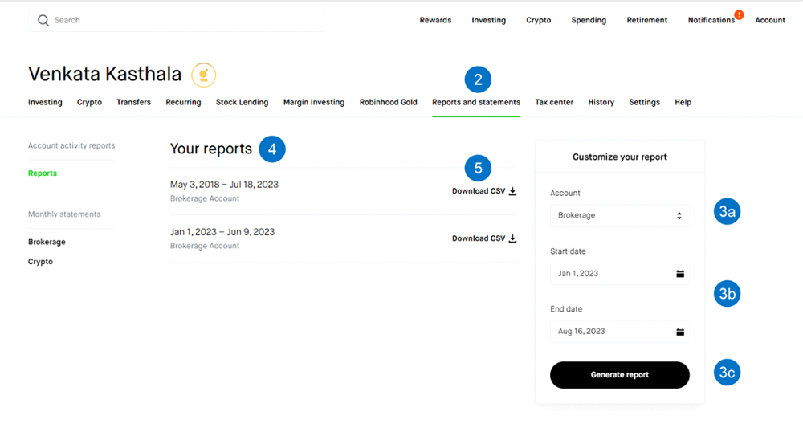
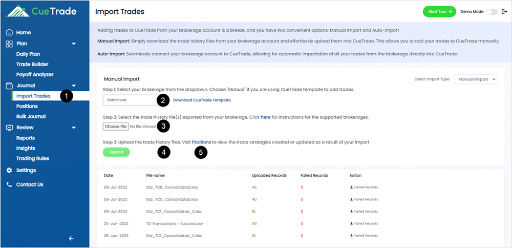

<div class="compare-popup">
    <div class="compare-pop-inner">
        <div class="pop-top-heading">
            <div class="left-heading">
              <h5>Robinhood Instructions</h5>
            </div>
            <div class="right-close" (click)="closeModal()">
              <mat-icon>clear</mat-icon>
            </div>
          </div>
          
        <div class="main-pop-inner">
            <div class="instructions-container">
                <h6>Instructions for Exporting Your Trades from Robinhood:</h6>
                <ul>
                    <li>Open a web browser and log in to your Robinhood account (not the mobile app)</li>
                    <li>Access the Account menu and choose Reports and Statements.</li>
                    <li>To customize your report and generate it:
                        <ul>
                            <li>From the Account dropdown, select Brokerage.</li>
                            <li>Enter the Start Date and End Date for the desired period.</li>
                            <li>Click the Generate Report button</li>
                        </ul>
                    </li>
                    <li>
                        Locate the CSV-format report containing trades executed between the specified dates in the Your Reports section.
                    </li>
                    <li>Click the Download CSV option to save the transactions in CSV format.
                        <div class="pt-2">
                            
                        </div>
                    </li>
                </ul>
            </div>	

            <div class="instructions-container">
                <h6>Instructions for Adding Robinhood Trades to CueTrade:</h6>
                <ul>
                    <li>Navigate to the Import Trades page within CueTrade.</li>
                    <li>From the Select Brokerage dropdown, opt for Robinhood.</li>
                    <li>Choose the file that you downloaded from Robinhood in step 5.</li>
                    <li>Click the Upload button to initiate the import process.</li>
                    <li>Your trades from Robinhood will now be accessible in CueTrade. To view them, go to the Positions page.
                        <div class="pt-2">
                            
                        </div>
                    </li>
                </ul>
            </div>
        </div>

        <div class="separator"></div>

        <div class="px-3 py-2 text-right">
            <button type="button" class="btn btn-secondary btn-sm" [mat-dialog-close]="data">Close</button>
        </div>
    </div>
</div>